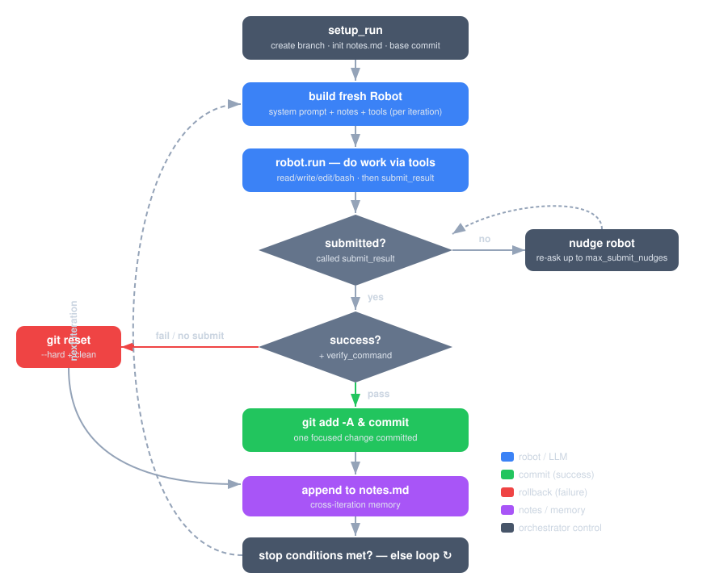

The Iteration Loop¶
The orchestrator is a loop. Each pass is an independent attempt at one improvement toward the objective. This page describes the full lifecycle and the decisions made at each step.

Setup (once per run)¶
Before the loop begins, setup_run:
- Confirms
HEADexists — aborts with guidance if the repo has no commits. - Creates the run branch
robot-to/<slug>-<timestamp>and recordsbase_commit. - Creates the run directory and seeds
notes.mdwith the objective header. - Adds the run directory to
.git/info/exclude. - Builds the per-run collaborators:
PromptBuilder,Backoff,StopConditions, and the eval (Evals.build(config, git:)—Evals::Codewhen--verify-command/--measure/--targetis set,Evals::Prosefor--eval prose, otherwise the unscoredEvals::Null; see Evals).
One iteration¶
1. Build a fresh robot¶
A new RobotLab::Robot is created every iteration — there is no shared chat
history between iterations. Continuity comes entirely from notes.md, which is
injected into the system prompt. The prompt (built by PromptBuilder) contains:
- the objective and current iteration number,
- the accumulated notes ("prior work"),
- the task instructions (make one focused change; run tests/build; a no-op is not success),
- the requirement to call
submit_iteration_result, - optional repair and stop-when sections.
The robot is given the submit_iteration_result tool. With --local-guards, it
also receives built-in file tools (read, write, edit, bash) and the
guardrail hooks. See Built-in Tools. If the
configured eval (or --protect-path) has protected paths, Guards::GraderLock
is attached too — independent of --local-guards — refusing edits to the
grader's own criteria. See Evals.
2. The robot works¶
robot.run executes. The robot makes changes using whatever tools it has, then
calls submit_iteration_result with:
| Field | Meaning |
|---|---|
success |
Did this iteration make meaningful progress? |
summary |
One sentence describing what was done or why it stopped. |
key_changes |
Files or changes made this iteration. |
key_learnings |
Insights to carry forward in the notes. |
should_fully_stop |
Set when a --stop-when condition is judged met. |
3. Handle "thinks but doesn't act"¶
If the robot ends its turn without calling submit_iteration_result, the
orchestrator re-prompts the same robot (preserving its chat) up to
--max-submit-nudges times, asking only for the result. This recovers the common
degenerate case where a model does work but forgets the final report. If it still
doesn't submit, the iteration is treated as a failure.
4. Decide: commit or roll back¶
result.success? ──► Eval#score ──► gate_ok? ──► improved (or --no-require-improvement)? ──► COMMIT
│ │ │
│ no │ no │ no
▼ ▼ (after R2 repair budget) ▼
ROLLBACK ROLLBACK ROLLBACK
- Robot reported failure (or no submit) →
git reset --hard; consecutive-failure counter increments. The eval is never called. - Robot reported success → the configured eval scores the working tree
(
Evals::Nullby default — see Evals):- Gate fails (
gate_ok: false) — handed back to the same robot for up to--max-verify-repairsrepair attempts, re-scoring each time; if the gate is still failing when the budget runs out,git reset --hardand recorded as[VERIFY FAILED]. - Gate passes, didn't improve (
improved: false, andrequire_improvement?is true — the default) →git reset --hard; recorded as[NO IMPROVEMENT]. Not counted as a failure. - Gate passes and improved →
git add -Aand commit (if anything is staged). The consecutive-failure/-error counters reset, and the eval'smet_target?is checked — if true, the run stops immediately.
- Gate fails (
See Evals for the full scoring model (this generalizes what used to be a verify-command-only gate — see Verification Gate).
5. Update the notes¶
Either way, the orchestrator appends an entry to notes.md — success, failure,
no-improvement, verify/gate-failure, or error — so the next iteration's robot
sees what happened. See Cross-Iteration Memory.
6. Check stop conditions¶
Stop conditions are evaluated before and after each iteration. The loop
ends if iterations, tokens, consecutive failures, or the eval's plateau counter
hit their limits; if the eval reports met_target; or if the robot set
should_fully_stop for a --stop-when condition. See
Stop Conditions and Evals.
Errors, retries, and backoff¶
Exceptions during an iteration (e.g. transient API errors) are caught:
- Authentication errors are permanent — the run aborts immediately.
- Other errors roll back the tree, record the error in notes, and retry after
an interruptible exponential backoff (
60 × 2ⁿseconds), up to--max-retriesconsecutive errors.
A SIGINT/SIGTERM (Ctrl-C) requests a graceful stop: the in-flight robot is
interrupted, the loop exits cleanly, and the exit summary still prints.
Commit-failure repair¶
If a commit itself fails (e.g. a pre-commit hook rejects the change), the failure is queued. The next iteration's prompt includes a repair section asking the robot to fix the uncommitted changes first. The working tree is not reset while a commit failure is pending, so the robot can address it.
Next: Cross-Iteration Memory.